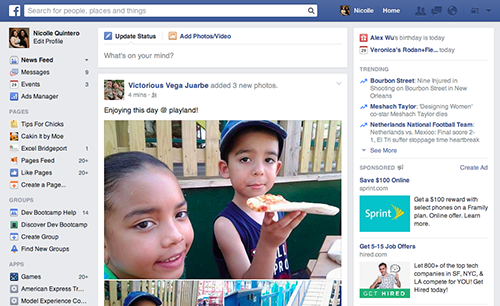
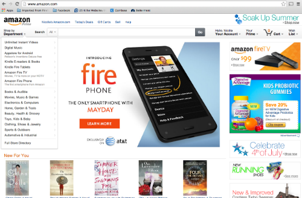
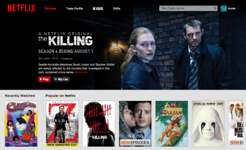

What's in a Design?
June 29, 2014
At first I struggled with this exercise because I couldn't think of my favorite "well-designed" websites. Then I realized, the whole point is to think about which sites I spend the most time on even if they are not necessarily well designed…

I just realized I absolutely hate the look of facebook.com. I've never uttered or even thought such a thing until this blog entry. That's note-worthy only because I worked there for six years and spent literally more waking hours on Facebook than anything else for the entirety of my career there. And in all that looking… it didn't occur to me that it's kinda poorly designed. The site is supposed to (and often does!) make me feel warm and fuzzy and connected, but when I step away from the screen I just feel confused by the abundance of things to look at. To be fair, I have no idea how to even fix the problem and still keep all the important features. And the design certainly doesn't act as a hindrance to my usage.
One fairly large issue is that an overwhelming part of the design hinges on the content that's posted. I have a lot of friends who (work at Facebook and) post beautiful images, but when I glance at a friend's Facebook homepage it looks and feels entirely different. For the worst, in my opinion. But for the sake of moving on to the things that can be controlled, let's assume the content is world-class and only adds to the aesthetic. What now?
Well, it's still really cluttered by the four columns of content, each with different colors, widths and widgets. This is especially confusing for people with poor or limited vision. After suffering a stroke, my father has issues seeing out of his right eye - when he browses Facebook I see him scanning the screen in all directions to make sure he didn't miss anything. It takes a while. A design with less columns would certainly help…
Which is exactly the experience on the Facebook mobile application. The only difference between the two is design and the mobile app wins by a long shot (and is even pleasing, in my opinion).
Amazon

Like Facebook, Amazon has a lot going on in terms of content. But given the site's purpose as a retailer, the wealth of information is a positive. I go to Amazon's site feeling like I'm on a mission to turn over all rocks looking for a particular item - and they delivery on that. The grid formatting and long page lengths, the abundance of filter options, the homepage ripe with suggestions on what I may want - it's A LOT, but it's exactly what I want.
Netflix

I love the design of Netflix. It's striking, simple to navigate, and beautifully displays the media for consumption. I find that I actually "waste" a lot of time on the site searching through titles and it's because the experience is so smooth and easy.